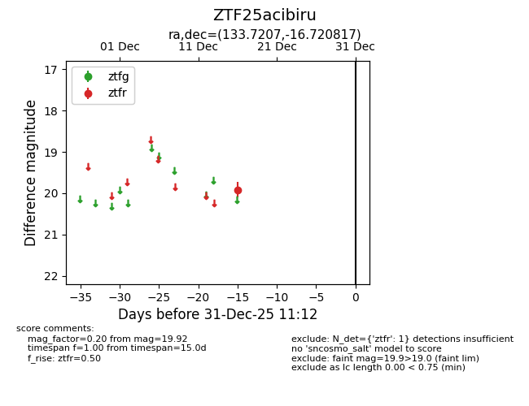
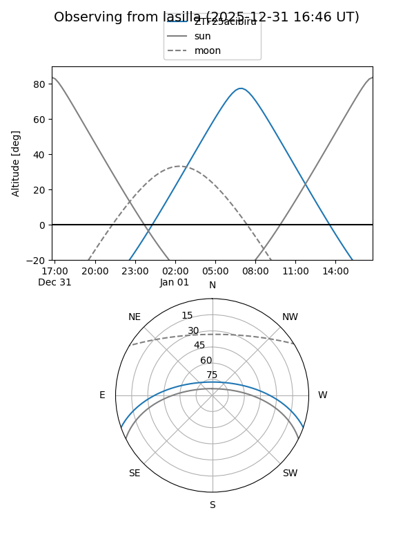
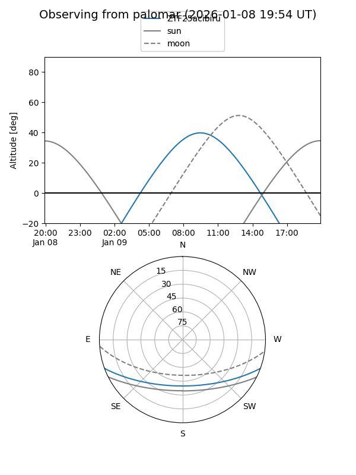

ZTF25acibiru
Target ZTF25acibiru at 2025-12-18 10:58
Aliases and brokers:
FINK: fink-portal.org/ZTF25acibiru
Lasair: lasair-ztf.lsst.ac.uk/objects/ZTF25acibiru
ALeRCE: alerce.online/object/ZTF25acibiru
alt names
ZTF25acibiru (ztf,fink_ztf)
Coordinates:
equatorial (ra, dec) = 133.7207,-16.72082
equatorial (HMS+DMS) = 08:54:52.97,-16:43:14.94
galactic (l, b) = (243.2144,+17.82045)
Photometry
last ztfr=19.92
1 ztfr detections
Lightcurve

Visibility


Additional plots